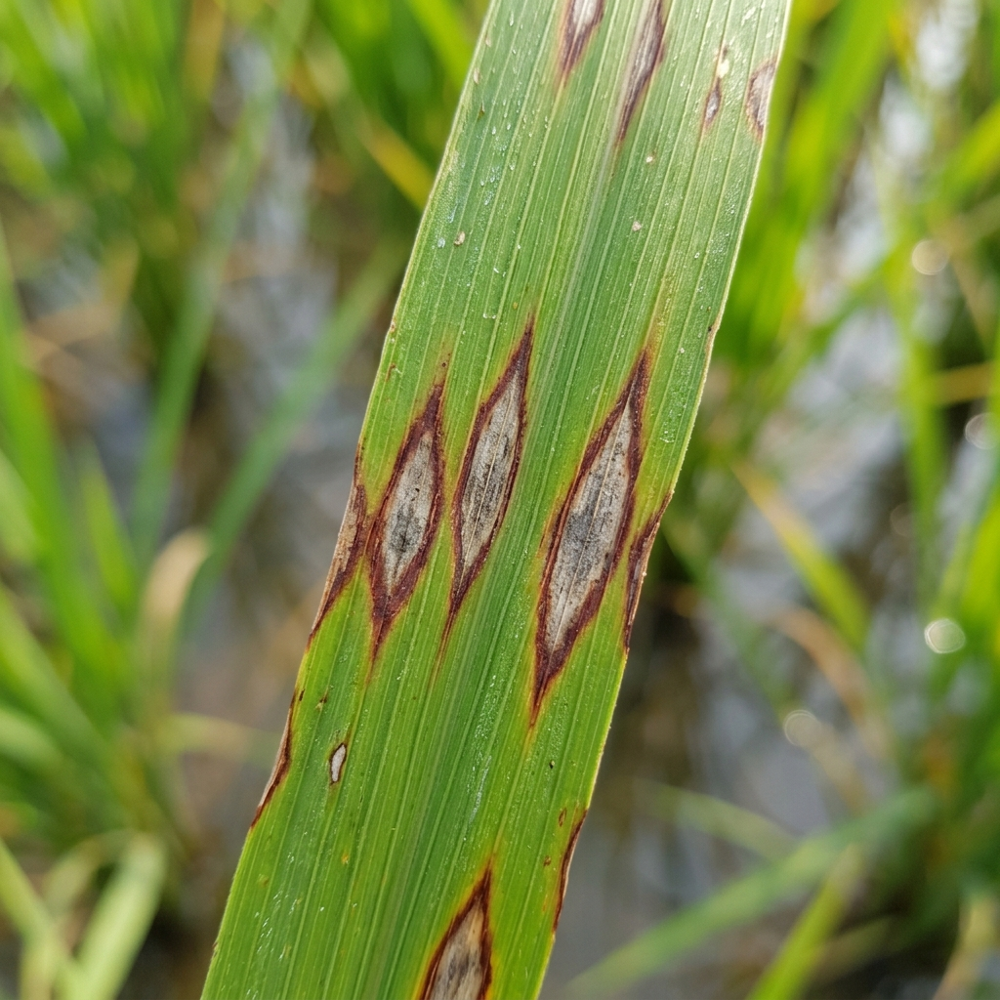
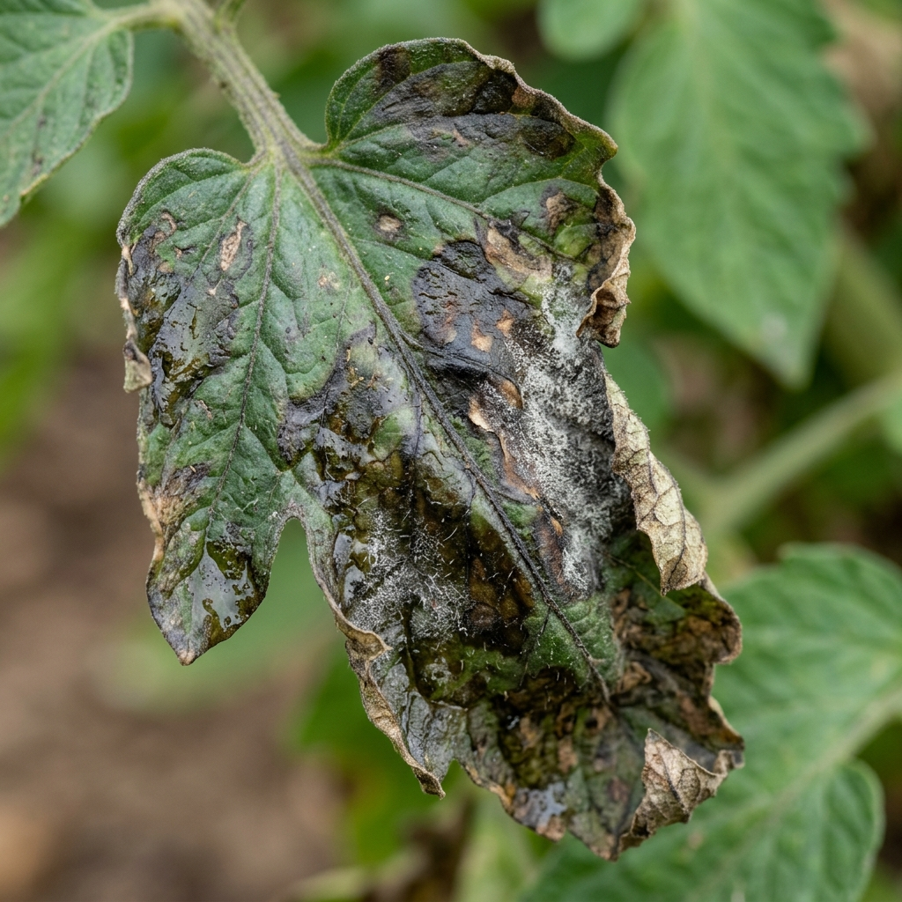

📊 Live Climate Metrics
Real-time Telemetry via Open-Meteo API🚨 Climate Risk Warnings & Mitigation
Real-time Threshold Engine🔬 AI Crop & Disease Scanner Vision AI v2.4
Upload leaf photo or test sample image for automated computer vision disease identification & microclimate risk assessment.
⚡ Test 1-Click Sample Diagnostics:
🌾 Wheat Rust

🌾 Rice Blast
🍅 Tomato Blight
🌱 Healthy Leaf
AI Diagnosis Result
Wheat Stripe Rust
Puccinia striiformis
High Severity
🔍 Identified Pathology & Symptoms
Linear yellow-orange powdery pustules along leaf veins, chlorotic leaf tissue, premature leaf senescence.
🚨 Weather Accelerating Spore Spread!
High relative humidity provides free moisture for spore germination. Ambient temperature is inside optimal replication range.
🧪 Agronomic Remediation & Dosage
Biological Option:
Spray Bacillus subtilis @ 2.5 L/ha early morning.
Chemical Treatment:
Apply Propiconazole 25% EC @ 1 ml/L.
Cultural Practice:
Avoid excess nitrogen fertilization.
🌾 Crop & Disease Vulnerability Radar
⏰ Smart Action Windows & Farm Advisory
Optimal Window Calculation🗓️ 24-Hour Safest Operation Window Matrix
Color-coded safety rating per hour
📈 24-Hour Temperature & Rain Curve
📅 7-Day Extended Outlook
🛡️ AI FarmGuard System Integrity
Continuously analyzing ambient humidity, solar irradiance, leaf wetness, and wind velocity against agronomic pathogen thresholds to minimize crop losses and input waste.